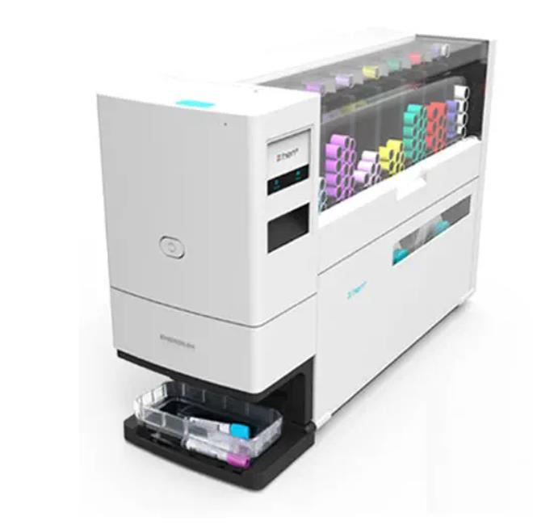

Automatisation et informatisation du laboratoire
Version courte : l'essentiel, puis les questions. Lire le cours complet
L'automatisation
L'automatisation : un appareil réalise beaucoup d'examens avec une intervention minimale de l'opérateur, sans augmenter les effectifs en proportion.
- Trois âges : fixe (une tâche), programmable (plusieurs tâches), intelligente (se surveille seule).
- Automate : machine isolée. Laboratoire automatisé : tout le circuit relié par convoyeurs et logiciels (ex. cobas 8100).
- Avantages : moins de variabilité et d'erreurs, meilleure reproductibilité.
- Elle englobe le transport, le chargement, l'évaluation des résultats et le stockage.
Chaînes d'automatisation totale (TLA) : Abbott (GLP systems), Beckman Coulter (Power Express), Roche (CCM), Siemens (Aptio), Thermo Fisher (TCAutomation).
Le LIS et le SIH
Le LIS (SIL, LIMS) pilote le laboratoire : échantillons et codes-barres, connexion aux automates, dossiers, qualité (ISO 15189 : qui a fait quoi, quand, avec quel instrument), comptes rendus.
Le SIH a trois couches : clinique (dossier, prescriptions, résultats), administrative et financière (admissions, facturation), technique et logistique (réseaux, serveurs, sécurité).
L'automate d'étiquetage
Il colle une étiquette droite, sans pli ni bulle, à la bonne hauteur : sécurité et traçabilité, gain de temps, précision, moins de manipulations.

- Thermique directe : sans ruban, mais l'impression s'altère (lumière, chaleur, frottements).
- Transfert thermique : la tête fait fondre l'encre d'un ruban sur l'étiquette.
- Au laboratoire : transfert thermique sur ruban en résine pure, lisible après −80 °C, azote liquide et centrifugation, insensible aux solvants et au sang.
Entretien : chaque jour (surfaces, tête à l'alcool isopropylique, rouleaux), chaque semaine (capteurs, bande), chaque mois à trimestre (lubrification, calibration).
Le transport pneumatique
Un réseau de tubes (PVC, 110 ou 160 mm) où des cartouches sont poussées ou aspirées par des turbines, avec des aiguillages et un logiciel de contrôle.
- Freinage : coussin d'air (une vanne se ferme, l'air piégé freine la cartouche), puis amortisseurs.
- Environ 5,5 m/s, avec ralentissement près des stations contre l'hémolyse.
- Cartouches : rouge urgence (STAT), bleu ou vert routine, jaune risque biologique.
- Filtres HEPA, 8 à 11 stations par ligne, priorité aux urgences (gaz du sang, troponines).
- Maintenance préventive (souvent annuelle) et corrective (condensats, cartouches coincées).


Robots coursiers et caissons
Robot coursier : environ 9 km/h, cartographie SLAM, LiDAR et caméras, ascenseurs par Wi-Fi, casiers verrouillés par code ou badge, batteries avec BMS.

Caisson : triple emballage (ONU 3373, ADR) et traçabilité (ISO 15189) : enregistreurs de température, capteurs connectés qui alertent hors de +2 / +8 °C, RFID, codes-barres, GPS.
Le tri pré-analytique

- Caméra 3D : type de tube par ses dimensions et la couleur du bouchon.
- Gel-Check : barrière de gel et indices de sérum (hémolyse, ictère, lipémie).
- Le tube EDTA (NFS) ne passe pas par la centrifugeuse.
- Plus de 1 000 tubes par heure, pistes magnétiques sans secousse, décapsulage en circuit fermé (moins d'aérosols).
- Un capteur de pression détecte un caillot pendant l'aspiration, arrête et alerte.
Questions d'examen
Réponds dans ta tête, puis touche « Voir la réponse ».
1. Différence entre un automate et un laboratoire automatisé ?
Voir la réponse
Automate : un équipement isolé qui fait une ou plusieurs étapes.
Laboratoire automatisé : tout le circuit, de la réception à la validation, relié par convoyeurs et logiciels.
2. Cite les trois âges de l'automatisation.
Voir la réponse
Fixe, programmable, intelligente.
3. Quelles sont les trois couches du SIH ?
Voir la réponse
Clinique.
Administrative et financière.
Technique et logistique.
4. Dans quel sens circulent la prescription et le résultat entre SIH et LIS ?
Voir la réponse
La prescription va du SIH vers le LIS.
Le résultat validé revient du LIS vers le SIH.
5. Par quels protocoles les automates parlent-ils au LIS ?
Voir la réponse
HL7 ou ASTM, souvent par un middleware.
6. Pourquoi le transfert thermique sur résine, et pas la thermique directe, pour les tubes ?
Voir la réponse
La thermique directe s'altère avec le temps, la lumière, le froid et les frottements.
Le transfert sur résine reste lisible après −80 °C, la centrifugation, les solvants et le sang.
7. Comment une cartouche pneumatique est-elle freinée à l'arrivée ?
Voir la réponse
Une vanne d'échappement se ferme : l'air piégé devant la cartouche se comprime et la freine (coussin d'air).
Puis des amortisseurs absorbent le reste.
8. Que signifient les cartouches rouges et jaunes ?
Voir la réponse
Rouge : urgence vitale (STAT).
Jaune : risque biologique.
9. Quels sont les trois emballages d'un caisson de transport ?
Voir la réponse
Récipient primaire étanche avec absorbant.
Récipient secondaire rigide ou étanche.
Emballage extérieur rigide, souvent isotherme.
10. Un trieur reçoit un tube EDTA, un tube sec et un citrate. Lesquels vont à la centrifugeuse ?
Voir la réponse
Le tube sec et le citrate.
L'EDTA (NFS) part directement en hématologie, sans centrifugation.